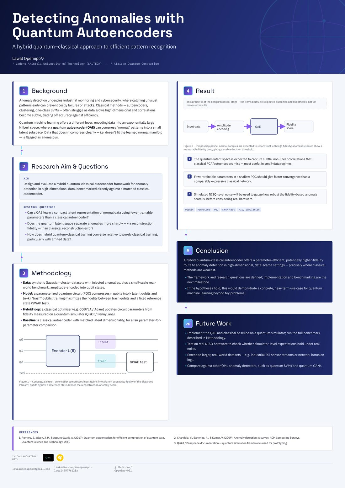

$ whoami --verbose
About
I am a recent Computer Science graduate of LAUTECH with a growing specialisation in data science and applied machine learning. Over the past few years, I've moved between three worlds that most people keep separate — backend engineering, data science, and quantum computing — because I think the most interesting problems live at the seams between them.
Day to day, that means designing REST APIs and relational schemas that hold up in production, and training models that turn raw patient or business data into decisions someone can act on. Alongside that, I've been developing a research track in quantum machine learning, currently focused on hybrid quantum-classical autoencoders for anomaly detection — work that's taken me through fellowships and conferences across the African quantum computing community.
I care about building things that are both technically rigorous and genuinely usable: systems clean enough to hand to a non-technical user, and research precise enough to defend in front of a technical one. I'm currently preparing for graduate research and international conference presentations in AI and quantum computing.
$ skills --list --by-category
Skills & Tools
A working stack spanning application backends, data pipelines, and quantum circuits.
|ψ⟩ research.featured()
Featured Research

Detecting Anomalies with Quantum Autoencoders
A hybrid quantum–classical approach to efficient pattern recognition
This research designs and evaluates a hybrid quantum-classical autoencoder framework for anomaly detection in high-dimensional data, benchmarked directly against a matched classical autoencoder. A parameterised quantum circuit compresses input qubits into a latent subspace; the fidelity of discarded "trash" qubits against a reference state — measured via a SWAP test — defines the reconstruction and anomaly score.
Research questions
- Can a quantum autoencoder learn a compact latent representation of normal data using fewer trainable parameters than a classical autoencoder?
- Does the quantum latent space separate anomalies more sharply — via reconstruction fidelity — than classical reconstruction error?
- How does hybrid quantum-classical training converge relative to purely classical training, particularly with limited data?
Methodology
- Synthetic Gaussian-cluster datasets with injected anomalies, amplitude-encoded into qubit states.
- A parameterised quantum circuit (PQC) compresses n qubits into k latent qubits, trained via SWAP-test fidelity.
- A classical optimiser (COBYLA / Adam) updates circuit parameters from fidelity measured on a quantum simulator.
- Benchmarked against a classical autoencoder with matched latent dimensionality.
$ ls ./projects
Projects
Applied systems — from healthcare ML to backend platforms for financial cooperatives.
|ψ⟩ interests.map()
Research Interests
$ git log --oneline
Experience
$ fellowships --active
Fellowships & Professional Development
$ certifications --verify
Certifications & Conferences
$ contact --open-channel
Let's build something
Open to research collaborations, backend engineering roles, and conversations about quantum machine learning.